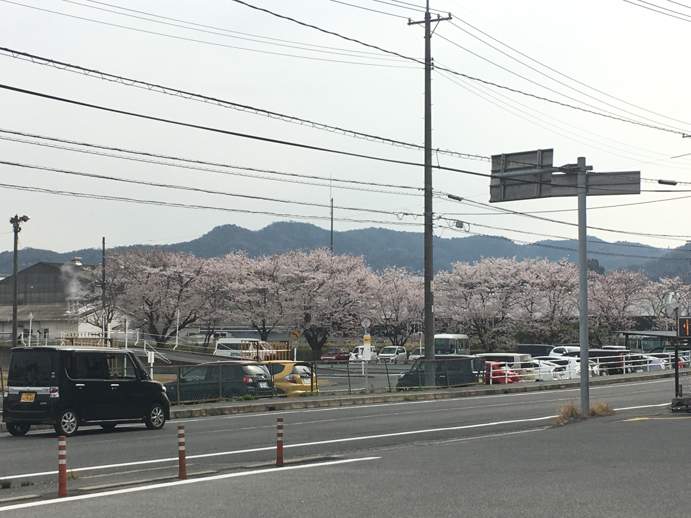

上一章
这章带大家看看我的生活环境，去我日常去的地方。

这就是我家，8层高大楼，有电梯。附近的房子一般是两层或者一户建。这个位置很好，不靠近大马路不吵。地势高（要从大街上楼梯上来），不怕豪雨。房租一个月57000多，另外3300车位。房租包含1000保险费，如果你忘记带钥匙可以随时打电话给房地产，一些简单的家居问题例如堵厕所也可以找他们。住了四年多我就只用过一次。那次大概是我把不能溶解的纸巾放在厕所把它堵了 ...

我所住的大楼。

大楼

下楼往右看的停车场。

下楼正对面就是招财猫卡啦ok的停车场。大街的入口有电梯可以上来，我刚来时悄悄用过两次...

下楼后往左看的房子。
很可爱的幼儿园班车，我在东京也见过。
对面的图书馆樱花季时，这是ブールバール西侧，我家是东侧，有天桥连接。那栋白色大厦是我刚来不久盖好的，是这里的高档公寓。开二号线离远就见到。
另一侧看图书馆樱花。

附近驾校的樱花季，我在这里学车。
附近驾校的樱花季，我在这里学车。

驾校附近的河流。
不知道哪里的樱花

不知道哪里的樱花
某个小学的樱花
挨着图书馆的古坟ミツ城古墳。一会儿带你们看夜景。（我都忘了为啥我雪天回来这里，可能是我刻意来拍雪景的。）
下雪天时街景。
市役所，刚来的时候这里周五还有自助餐，好像1500。日本很贴心，很多地方冬天都提供毛毯(日本人喜欢用来改大腿)，这里也有，还提供不同度数的老花镜方便人填表格。

离家最近的药妆店/小超市コスモス。这里有药品还有少量蔬果，肉类，各种冷冻食品饮料等，价格比超市便宜。


家里附近，位于ブールバール的やまいち精肉店。这个店很高级，等候时候还可以喝咖啡。全部是日本肉，过年还可以定整鸡（日本很少整鸡）。这里有很高级的牛肉，但大量买也有便宜的。猪肉最便宜100左右100克，质量还不错。鸡全翅买1公斤左右60元100克，这个价格是非常便宜。这个店就在柬埔寨料理店附近。

精肉店门口

精肉店所在的ブールバール。图偏右上位置红色牌子アコム有条10米不到很斜的斜坡，这里下去可以去蛋糕店paganini。图中间偏右上的白色房子是这里一个明显建筑，我来的时候刚建好的，算是这里高档住宅。

农家超市となりの農家。位于332国道，在paganini附近，从我家骑车越15分钟。里面卖的都是本地蔬果，鱼类及肉类。蔬果不像其他超市有“规格”。例如黄瓜，超市买的都符合“规格”，所以大小都差不多，但这里不受限制。这里的蔬菜都是农民自己放在这里出售，还贴有他们的名字，有些比超市便宜。卖的东西很多其他超市没有，例如空心菜，雪莲果，青木瓜，香菜，茴香等。这里还卖很多本地酒，还有手工（日本是个手工发达的国家）。圣诞节还有自制花圈。
蔬菜不
肉类部
本地酒
各种手工，我买过耳环。
包，我买过好几个。
日常生活我还有其他常去的超市，例如大健身房对面的Hallows（ハロズ），学校附近健身房对面的youme town，还有Paganini附近的生协coop，不过我忘了拍照了。
下一章